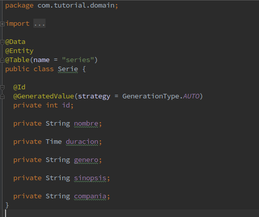
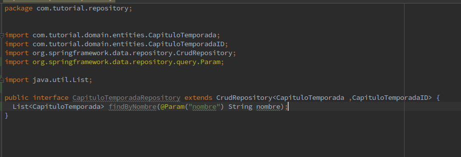
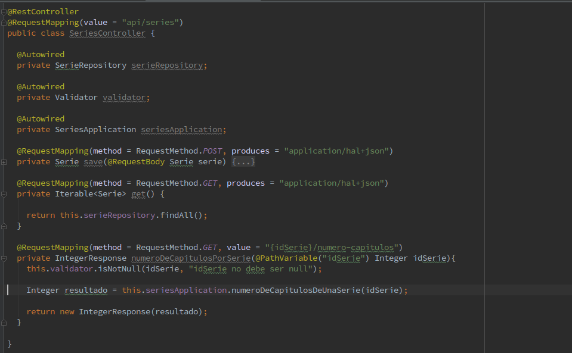

Spring Framework
Created by Team Darwin
@DynamicInsert
Excluye las propiedades con valor nulo en la instrucción SQL INSERT de HIBERNATE.
Cliente cliente = new Cliente(); cliente.setNombre("Pedro"); cliente.setApellidoPaterno("Garcia"); cliente.setApellidoMaterno("Owen"); cliente.setFechaNacimiento(fechaNacimiento);INSERT INTO clientes(nombre,apellidoPaterno,apellidoMaterno,fechaNacimiento) VALUES(?,?,?,?);
@DynamicUpdate
Excluye las propiedades sin modificar en la sentencia de actualización SQL de HIBERNATE.
Cliente cliente = new Cliente(); cliente.setNombre("Pedro"); cliente.setApellidoPaterno("Garcia");UPDATE clientes SET nombre=?,apellidoPaterno =? WHERE id=? ;
Entidad
Una entidad de persistencia (entity) es una clase de Java ligera, cuyo estado es persistido de manera asociada a una tabla en una base de datos relacional.
@Entity
@Data
@Entity
@Id
Indica la llave primaria de un entity
@GeneratedValue(strategy = GenerationType.AUTO)
Indica como se genera el valor de un campo.
@Table(name = "")
Indica nombre de tabla a la que pertenece el Entity
@Transient
Se utiliza para indicar que un campo no debe ser persistido en el ENTITY, es decir, la propiedad no pertenece a un campo de la base de datos.
Repository
@RepositoryRestResource
exported = false/true
path = "nombre"
Querys
| Keyword | Sample | JPQL snippet |
|---|---|---|
| And | findByLastnameAndFirstname | … where x.lastname = ?1 and x.firstname = ?2 |
| Between | findByStartDateBetween | … where x.startDate between ?1 and ?2 |
| LessThan | findByAgeLessThan | … where x.age < ?1 |
| After | findByStartDateAfter | … where x.startDate > ?1 |
| OrderBy | findByAgeOrderByLastnameDesc | … where x.age = ?1 order by x.lastname desc |
@Query
@Query("select u from User u where u.emailAddress = ?1")
User findByEmailAddress(String emailAddress)
@RestController

@RestController
@RequestMapping(value = "api/series")
public class SeriesController {
@Autowired
private SerieRepository serieRepository;
@Autowired
private Validator validator;
@Autowired
private SeriesApplication seriesApplication;
@RequestMapping(method = RequestMethod.POST, produces = "application/hal+json")
private Serie save(@RequestBody Serie serie) {
this.validator.isNotNull(serie, "serie no debe ser null");
return this.serieRepository.save(serie);
}
}
@RequestMapping
La emplea Spring para conocer a que Controller o método de un Controller tiene que direccionar cada llamada del cliente.
method
value
produces
consumes
@RequestMapping(method = RequestMethod.POST, value = "dispersion-stp", produces = "application/hal+json")
@GetMapping
@PostMapping
@PutMapping
@DeleteMapping
@DeleteMapping
@PathVariable
Anotación que indica que un parámetro de método debe estar sujeta a una variable URI
http://localhost:8080/api/clientes/1001
@GetMapping("/clientes/{idCliente}")
public Resource get(@PathVariable(value = "idCliente") Integer idCliente) {
}
@RequestParam
Anotación utilizada para acceder a los valores de los parámetros de la solicitud al controller.
http://localhost:8080/api/clientes/saldo?param1=algo
@RequestMapping(method = RequestMethod.GET, value = "algo")
public String getDetails(
@RequestParam(value="param1", required=true) String param1){
...
}
@Autowired
Permite resolver la inyección de dependencia.